近日，第七届广东现代农业博览会（以下简称农博会）组委会在广州召开新闻发布会，由广东省农业厅主办的第七届农博会将于11月25日至28日在广州琶洲广交会展馆举行。广东省农业厅副厅长程萍和省农展馆馆长李海林在新闻发布会上亲自介绍了本届农博会参展、布展等情况。
本届农博会盛况
省农业厅副厅长程萍：自2006年以来，在省委、省政府的高度重视和农业部的大力支持指导下，我省已连续成功举办了六届农博会，在促进农产品贸易、培育推广农业品牌、加快转变农业发展方式等方面作出了突出贡献。广东农博会已经在全国具有较大影响力，成为农业农村改革发展成果展示窗口、农业科技创新成果转化应用桥梁、农业经贸合作的重要平台。
省农业厅副厅长程萍：本届农博会紧扣“创新让生活更幸福”的主题，以“展示最新成果、助推产业升级”为办展宗旨，秉承“创新、开放、务实”的办会原则，采取“政府扶持与行业参与相结合”的运作模式，以“农业精品展示、农业交流合作、农业贸易洽谈”为主要内容，努力打造符合“市场化、专业化、国际化、品牌化、信息化”要求的高水平农业盛会和贸易交流平台。
省农业厅副厅长程萍：展览总体布局分为省综合展示区、省内展区、外省及粤台农业合作展区。其中省内展区包括：地市展区(粤东、粤西、粤北、珠三角展区）、省直单位展区（省妇联、团省委展区）、农业社会化服务体系展区（科技创新、农业金融服务、休闲农业、互联网展区）和特色农业专业展区（粮油、花卉、果蔬、名茶、畜牧、农产品地理标志、农业装备展区）。外省展区邀请泛珠三角省区和对口援助的新疆、西藏地区组织企业参展。本届农博会还专门设置了粤台农业合作展区。
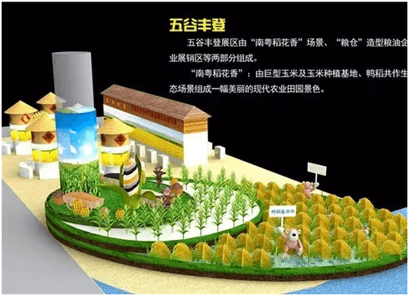 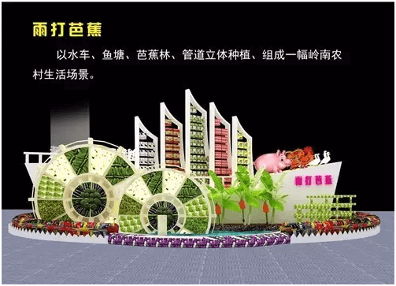省农业厅副厅长程萍：经过几个月来的精心筹备，农博会的各项准备工作正按计划有条不紊地开展。第七届农博会将于2016年11月25日-28日在广州琶洲广交会展馆B区9.1馆和10.1馆举行。
省农业厅副厅长程萍：今年让我们继续开办“网上广东农博会”这一个平台，外省的消费者可以通过这个平台买到广东的优质农特产品。除此之外，我们还在京东，苏宁易购这些电商平台上，设立了广东特色馆。消费者可以在这些特色馆上，直接网购到广东的优质农特产品。
省农业厅副厅长程萍：农博会招展招商的情况也是十分喜人！到目前为止，省内外企业非常踊跃报名参展，5个省直部门、7个泛珠三角省市区及新疆、西藏地区的企业确定参展，标准展位近800个，目前已全部落实参展企业名单。第七届农博会广泛邀请专业观众和采购商到会，共发出3000份邀请函。一批大型连锁超市和农产品贸易公司、进出口公司、农产品批发和配送企业、农产品加工企业等将到会洽谈采购。采购意向包括水果、蔬菜、油料、水产品、小型农机设备以及肥料、温室用料及设施农业等生产资料。
本届农博会六大看点
省农业厅副厅长程萍：本届农博会亮点纷呈、看点多多。看点一，大型农产品创意造型展现岭南风韵。本届农博会在设计理念上大胆创新、创意十足，设计布展以展馆主通道为“河流”，以主通道两侧展区为“两岸”进行布局，在突出岭南区域经济特色的同时，通过展馆主入口及主通道两侧的农产品创意造型，营造农博会的亮点，既吸引广大消费者踊跃参观选购，又能达到扩大广东名牌农产品的宣传作用。“丰收船”、“茶是故乡浓”、“雨打芭蕉”、“鸭稻共作”、“巨型玉米”、“笑语花船归”等一步一景，将令观众犹如徜徉在岭南水乡中。
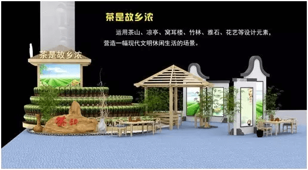 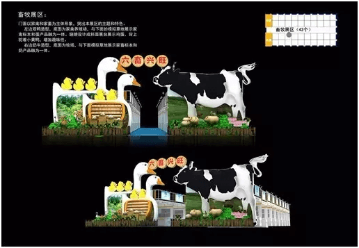 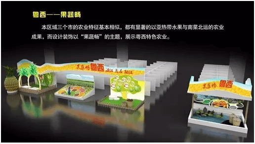 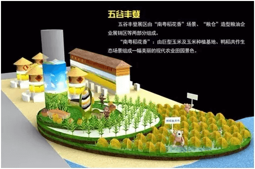省农业厅副厅长程萍：看点二，高精尖农业科技成果集中亮相。本届农博会着重展示农业新品种、新技术、新成果、新产业、新农民，并着重推广农业名、特、优、新品种。在农博会现场可以看到当前农业生产领域的最新成果。
省农业厅副厅长程萍：看点三，“互联网+ ”体验不一样的农业。“互联网+”现代农业是农业发展方式的变革与创新。利用移动互联网、大数据、云计算、物联网等新一代信息技术与农业的跨界融合，展示基于互联网平台的现代农业新产品、新模式与新业态，如农业互联网金融、农业众筹、农产品电商、农产品质量溯源、农业生产远程监控等，让市民体验到不一样的农业。
省农业厅副厅长程萍：看点四，“品牌农业”让市民买得安心、吃得放心。本届农博会参展企业近800家，3000多种农产品集中展示展销。备受关注的第二届广东“十大名牌”系列农产品也将在本次农博会上揭晓。今年4月，第二届十大名牌系列农产品评选推介活动启动以来，共收到来自全省21个地级市近400个产品申报，受到了广大农业企业以及消费者的高度关注和积极参与。值得推介的是，第一、二届“十大名牌”系列农产品获奖产品也将集中展销，农产品企业准备了多重优惠，让市民在展会现场可以购买到价廉质优的农产品。 另外，本届农博会还特别开设了名牌农产品超市，数百个广东名特优新农产品可供市民集中选购。
省农业厅副厅长程萍：看点五，高品质论坛活动精彩纷呈。除开幕活动外，展会期间举办多个高品质的论坛与活动，如广东省第二届“十大名牌”系列农产品名单公布仪式，首批广东省农产品出口示范基地名单公布仪式，品牌农业、电子商务、科技专家、休闲农业等论坛，以及企业和产品的经贸和推介活动等。
省农业厅副厅长程萍：看点六，粤台农业合作展区带来优质农产品。本届农博会首次设立粤台农业合作展区，届时，市民不仅能近距离感受到宝岛台湾的农业风采，还可以品尝、购买来自台湾或与台湾合作生产的优质农产品。
本届农博会六大特色
省农业厅副厅长程萍：上面本届农博会的主要看点！
省农业厅副厅长程萍：本届农博会还有许多创新点。一是体现创新驱动，农业科技首次以科技联盟的形式参展。去年启动的全省农业创新联盟和今年启动的12个产业技术体系、8个共性关键技术创新团队最新的科技成果，将以科技联盟的形式在本届农博会上集中展出。
省农业厅副厅长程萍：二是体现区域特色。本届农博会打破传统以地市为单位划分单独展区的组展方式，而是以经济区域划分4个地市片区进行展示展销活动，分别为珠江三角洲展区、粤东展区、粤西展区和粤北山区展区。
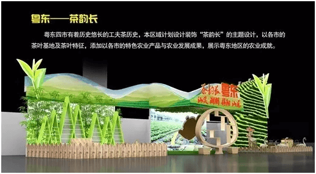 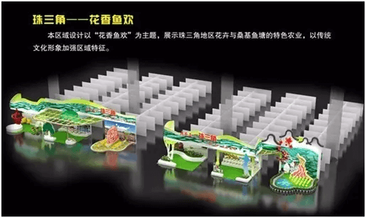 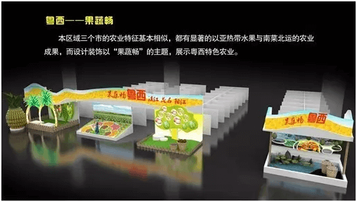 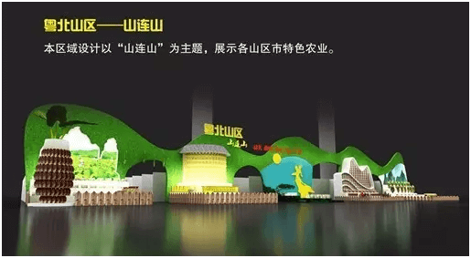省农业厅副厅长程萍：三是体现行业特色。首次以特色行业设置专业展区。设立7个专业展区。五谷丰登展区，集中展示展销省内各地优质名米、名薯和食用油等粮油农产品；花花世界展区，集中展示展销广东花草及各种观赏植物；瓜果飘香展区，集中展示展销省内各地优质名果、蔬菜（瓜）；茗茶雅韵展区，集中展示展销省内各地优质名茶；独树一帜展区，集中展示展销广东省地理标志农产品；六畜兴旺展区，集中展示展销省内各地名猪、名鸡等畜禽产品以及肉蛋奶、饲料兽药名牌产品；精机荟萃展区，集中展示展销省内各地先进适用农业机械装备、设施和技术。
省农业厅副厅长程萍：四是体现地标特色。省农业厅与省质监局合作，联合组织我省最具代表性的获国家地理标志的农产品亮相，在独树一帜展区集中展示展销40多种地理标志农产品。
省农业厅副厅长程萍：五是体现服务特色。首次设立农业金融服务展区。本届农博会积极邀请保监局、中国邮政储蓄银行广州市分行等金融单位参展，主要展示政策性保险、产业基金、农业担保、政银保和融资等项目，体现广东金融支农、金融服务三农的措施和成效。
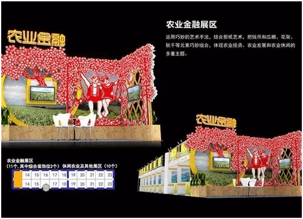省农业厅副厅长程萍：六是体现合作共赢。泛珠三角省区、对口援助的新疆、西藏地区将组织企业参展。
本届农博会五大特点
省农业厅副厅长程萍：下面介绍本届农博会的主要特点。一是展品丰富展商踊跃。本届农博会的展出面积达2万平方米，参展企业近800家，3000多种优质农产品集中亮相，将打造成农业品牌的盛会。
省农业厅副厅长程萍：二是科技创新闪亮全场。本届农博会突出名牌农产品、高新技术成果、金融服务、“互联网+农业”展示，新品种、新技术无处不在，特别是去年启动的全省农业创新联盟和今年启动的12个产业技术体系、8个共性关键技术创新团队联袂参展,亮出他们最新的科技成果。使农博会成为科技引领、成果展示、技术交流、精品贸易的盛会。
省农业厅副厅长程萍：三是活动内容精彩纷呈。农博会期间，还将同步安排名牌农产品推介、品牌农业论坛、电子商务论坛、科技专家论坛、休闲农业论坛、无人机应用、农产品冷链运输介绍、品牌故事分享等活动。
省农业厅副厅长程萍：四是产销两旺对接便利。积极组织、邀请龙头企业、农民合作社、家庭农场、专业化服务组织、职业农民和采购商到展会现场参观、学习、对接、洽谈，提升供需双方对接覆盖面和密切度。展会首日设为专业观众参观日，为专业观众和采购商的参观、洽谈、贸易创造便利条件。
省农业厅副厅长程萍：五是品牌效应日益凸显。本届农博会是农业品牌的盛会，绝大部分参展企业是地市级以上的农业龙头企业，有一大批“三品一标”名牌农产品和地方名特优新农产品集中亮相,同时将公布今年我省新评选出的第二届广东“十大名牌”系列农产品,并进行重点推介。
本届农博会展会布局详情
省农展馆馆长李海林：展销区则由六个部分组成：1、省内地市展销区（9.1馆 400个展位）2、专业展销区（10.1馆281个展位）3、农业社会化服务展销区（10.1馆 79个展位）4、省直单位展销区10.1馆 39个展位）5、外省（泛珠省区及对口援助西藏、新疆）农业合作展销区（10.1馆 43个展位）6、台湾农业展销区（10.1馆 24个展位）。
省农展馆馆长李海林：首先是规模、布局及展位分配。本次展览规模为2万㎡（设952个展位），地点设于琶洲广交会展馆B区9.1和10.1馆。总体布局划分：1、综合展示区（9.1馆 62个展位）2、活动区（9.1馆 24个展位）3、展销区（866个展位）三大部分。
省农业厅副厅长程萍：11月25日上午9时30分，第七届农博会将在广州琶洲广交会展馆举行开幕式。届时，农业部、省委、省人大、省政府、省政协领导以及各参展团、参展商、采购商等嘉宾将出席开幕式。欢迎大家来逛展！